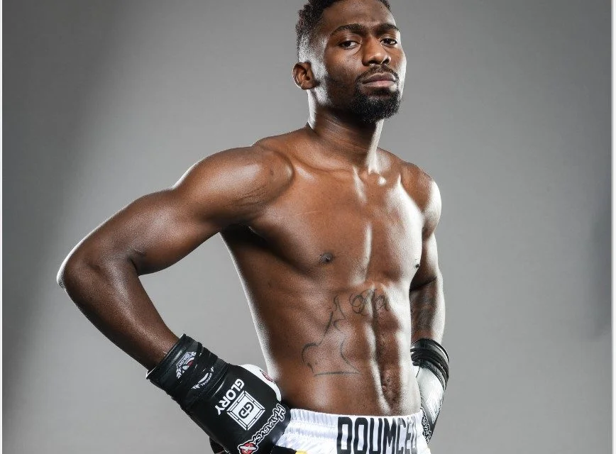

Qu'est-ce que le Kick-Boxing ?
Le Kick-boxing est un sport de combat qui combine des techniques de boxe anglaise avec des coups de pied issus de disciplines telles que le karaté ou le muay-thaï.
Il existe plusieurs variantes selon les règles, incluant le full-contact et le K-1. Ce sport est reconnu pour son intensité et sa popularité sur les scènes mondiales grâce à des organisations majeures comme GLORY et K-1.
Combattants légendaires
Cédric Doumbé

Cédric "Le Meilleur" Doumbé est l'un des kickboxeurs les plus talentueux de sa génération.
Double champion du monde GLORY, il est célèbre pour sa capacité à combiner puissance, technique et trash talk unique.
Doumbé a également entamé une carrière en MMA, où il continue de faire parler de lui avec des performances spectaculaires.
Badr Hari

Badr Hari est l'un des poids lourds les plus célèbres du kick-boxing.
Avec un style explosif et un charisme incontesté, il a marqué l'histoire du K-1 et a captivé les foules dans le monde entier.
Malgré une carrière controversée, il reste une légende du sport.
Alex Pereira

Alex "Poatan" Pereira est un kickboxeur brésilien légendaire, reconnu pour son incroyable puissance de frappe.
Champion du monde GLORY dans deux catégories de poids, il est également célèbre pour ses victoires mémorables contre Israël Adesanya.
Pereira s'est ensuite reconverti en MMA, où il a remporté le titre des poids moyens à l'UFC.